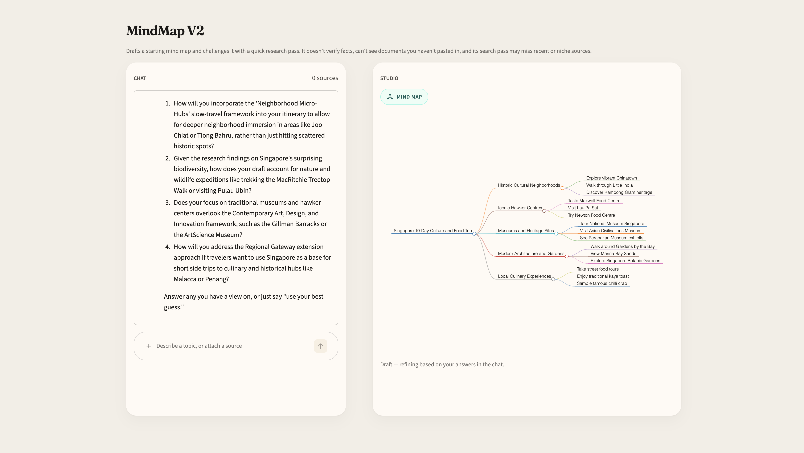

A chat-first agent that drafts a mind map, challenges it with research, and only finalizes after you answer.
Pranaya Manikonda · evaluate the live flow, then the choices behind it
Who it’s for
Turn a vague topic into a structured map they can argue with — trip, launch, or research plan — without trusting the first draft.
They can name what changed after the challenge step, attach a source that shows up in the map, and say whether they’d use the result.
The loop
Studio stays closed until a draft exists. That is the mental model: conversation first, artifact second.
Product

HCAI mapping
Disclaimer on every screen: it drafts and challenges, it does not verify facts, and search can miss niche sources.
You can skip goal/constraints, answer any probing question, attach files, or start over. The map is not a black box dump.
After a final map: rate, comment, Approve. Logged to eval/feedback_log.csv for the course packet.
What to try
Chip: “10-day trip to Singapore.” Skip goal if you want. Answer two probing questions. Watch the Studio map change.
Attach a short .txt or .pdf mid-chat. Check whether the map actually absorbs it — not just that the file uploaded.
Read the disclaimer. Does it match what you’d tell a friend about relying on this for a real trip or budget?
Rate the result. If something felt off, say so in the comment — that is the intended eval signal.
Evidence
Honest gaps
Free-tier Gemini is shared. If draft fails or Search is empty, it is often rate limit — not a broken map. Fallback model: gemini-3.5-flash-lite.
Links
Repo: github.com/pranayamanikonda/mindmap-v2
Deploy: share.streamlit.io (this repo, app.py)
Secret (Cloud only, never in Git): GEMINI_API_KEY = "…"
After deploy, the share URL looks like https://<app-name>.streamlit.app — paste that to evaluators.
The useful critique is: did the challenge step earn the map, or would you have been better with a blank page?